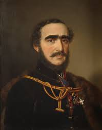

 Gróf Széchenyi István született Bécsben 1791. szept. 21-én. Meghalt Döblingben 1860. ápr. 8-án. Atyja Széchenyi Ferenc a Magyar Nemzeti Muzeum nagynevü megalapitója anyia Festetics Juliánna grófnő Festetics Pálnak leánya volt, aki első férjének gróf Széchenyi Józsefnek 1775. november 20-án bekövetkezett halála után 1777. augusztus 17-in pápai engedéllyel annak testvéréhez gróf Széchenyi Ferenchez ment nőül. A házasságukból született öt gyermek: három fiu és két leány között István volt a legfiatalabb. Lunkányi János vezette gyermekkori első kiképzését, ki mellett egyes tantárgyakat külön szakférfiak tanitottak. Igy Révai Miklós tanitotta az architektúrát, egy Poupár nevü házi káplán az olasz és francia nyelvből adott órákat. A család körében a magyar nyelv volt az uralkodó és a gyermek nevelése is magyar szellemben történt. Már 17 éves korában két testvérével együtt felvétette magát a hadsereg kötelékébe és 1809. április 7-én főhadnagy lett a würtenbergi huszárezredben s itt a benne összpontosult bizalom folytán, az ezred pénztárának a kezelését is reá bizták. A franciák elleni háborúban élénk részt vett és magát több izben kitüntette. 1826. febr. 15-én a katonai szolgálatból kilépett és külföldi utazásokra forditotta idejét s nemcsak egész Nyugat-Európát, de Kis-Ázsia partjait is beutazta. Haza érkezte után Magyar ország és Erdély nevezetesebb városait látogatta meg, mely alkalommal a legtekintélyesebb hazai vezérférfiakkal ismeretséget és barátságot kötött. Ő volt az, aki a lóversenyeket hazánkban meghonositotta, melyek 1822-ig nemcsak nálunk, de Ausztriában is ismeretlenek voltak. Életének legkimagaslóbb ténye a Magyar Tudományos Akadémia megalapitása volt, mely célra az 1825-iki országgyülésen egész évi jövedelmét: 60000 forintot ajánlott fel. Eközben irodalmi téren is folytonosan müködött s első munkáját a Lovakrul 1828-ban adta ki. Ugyanez évben fogolt a Hitel cimü munka megirásához, melyet 1830-ban tett közzé, hogy benne foglalt uj és átalakitó eszméivel s reformterveivel forrongásba hozza s általuk keltett szellemi harc segélyével a haladás utjára terelje a nemzetet. Jórészben szintén e célt szolgálja a Világ cimü munkája, melyet Dessewffy József gróf támadása ellen, a Hitel védelmére irt. E két munka az akkori idők legnagyobb eseménye és hatásuk leirhatatlan volt; két pártra szakitották a nemzetet: egyik, mely Széchenyit képzelgőnek tartotta s müveit megégette, a másik, mely diadalfiának nevezte és a nemzet megváltójának tekintette és égig magasztalta. A szinügy érdekében bocsátotta közre 1832-ben a Magyar Játékszinről szóló röpiratát. 1833-ban irta a Stadium-ot, melyben reformterveit még szabatosabban kifejti. 1834-ben kezdett Hunnia cimü munkája megirásához, melyben arról értekezik, hogy miként kellene Budapest fővárosát a modern kényelemnek megfelelő módon rendezni.
Vissza!